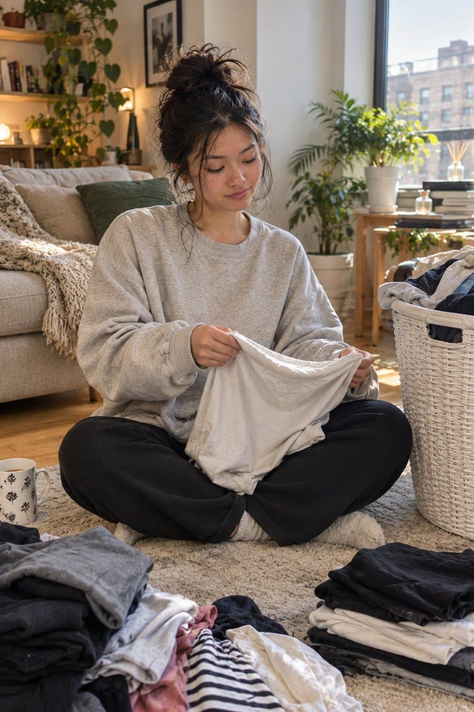

Lived-in apartment laundry candid
REA-014Realismunspecifiedby prompttolife (@prompt2llife)2026-09-27

Candid photo folding laundry cross-legged on a rug in a cozy lived-in apartment.
Prompt
A photorealistic candid photo of a beautiful young Asian woman sitting cross-legged on a rug in a cozy, lived-in apartment, folding clothes beside an overflowing white woven laundry basket. She wears an oversized beige sweatshirt, black sweatpants, and fluffy socks, with a natural messy bun and loose strands. She has a relaxed, slightly tired but pleasant expression and natural realistic skin texture. Clothes are scattered around her with neatly folded piles nearby, a coffee mug on the floor, plants and a sofa with a throw blanket in the background. Warm natural afternoon window light, cozy home atmosphere, realistic proportions and hands, natural pose, shallow depth of field, 35mm lens, f/2.2, Sony A7III, 8K, unretouched RAW photography, authentic everyday lifestyle aesthetic.
Our Seedance 2.5 adaptation
[ADAPTED for Seedance 2.5 by Grok Bot; not the creator's prompt. Follows the official BytePlus Seedance 2.5 prompt guide: asset binding → one-sentence summary → integer-second timeline → consistency notes → negatives.] API: duration 10, ratio 16:9, resolution 1080p, generate_audio true. Assets: Image 1 is the woman (identity lock). Image 2 is the apartment (scene reference). Summary: A 10-second cozy, candid one-take. The woman from Image 1 sits cross-legged on a rug in the lived-in apartment from Image 2, folding laundry beside an overflowing basket in warm afternoon window light. 0-4s: Locked-off medium-wide shot. She shakes out a T-shirt, folds it and adds it to a neat pile. 4-7s: She pulls a single odd sock from the basket, searches for its pair and gives up with a small tired laugh. 7-10s: She reaches for her coffee mug on the floor, sips and exhales. Hold. Keep consistent: realistic hands and fabric folding, the same oversized beige sweatshirt and messy bun, natural pacing. Audio: fabric rustle, the mug on the floorboards, distant street noise. No BGM. No subtitles.
Tags: candid, lived-in interior